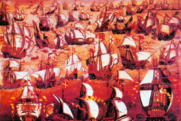
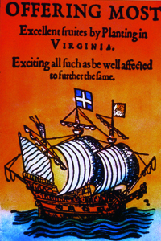
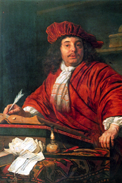

Lezione 13  Imperi Coloniali
Imperi Coloniali

-
150
422
-
185
195
-
138
452
-
138
480
-
185
408
-
185
235

MANICA
Lo scontro tra l’Invincible Armada spagnola e la flotta inglese, capitanata da Sir Francis Drake, avvenuto nel 1588 nel canale della Manica, vede la sconfitta spagnola e l’inizio dell’ascesa dell’Inghilterra di Elisabetta I: questo dipinto di scuola inglese rappresenta probabilmente la battaglia di Gravelines. 
VIRGINIA
Fondata nel 1584 da Sir Walter Raleigh, la Virginia è la prima colonia inglese del Nord America. Una delle sue produzioni più importanti è senza dubbio quella di tabacco, la cui qualità viene pubblicizzata in quest’insegna settecentesca.
AMSTERDAM
Tra il 1590 e il 1650 si ha una rapidissima ascesa dell’Olanda. Nascono le Compagnie mercantili olandesi: la Compagnia delle Indie Orientali, nel 1602, e la Compagnia delle Indie Occidentali, nel 1616.
Amsterdam diventa la capitale europea dei traffici. Ha la flotta mercantile più grande dell’Europa. Daniel Bernard è uno dei principali azionisti della compagnia delle Indie Orientali: qui lo vediamo in un ritratto del pittore olandese Bartholomeus van der Helst, comtemporaneo di Rembrandt e protagonista del Secolo d’Oro olandese.PROVINCE UNITE
1566: Rivoluzione antispagnola nei Paesi Bassi. Nel 1581 viene proclamata la Repubblica delle Province Unite, riconosciuta dalla Spagna solo nel 1648.PORTOGALLO
Nel 1580 il Portogallo e tutti i suoi possedimenti vengono annessi alla Spagna perchè i sovrani portoghesi muoiono senza lasciare eredi. Solo nel 1640 il Portogallo, aiutato da Francia, Olanda e Inghilterra, torna indipendente.NEW YORK
Nel 1624 gli olandesi fondano la Nuova Amsterdam. La città verrà ceduta agli inglesi – che grazie alla superiorità militare riescono a strappare il predominio dei mari agli olandesi - e sarà ribattezzata New York (fine 1600).